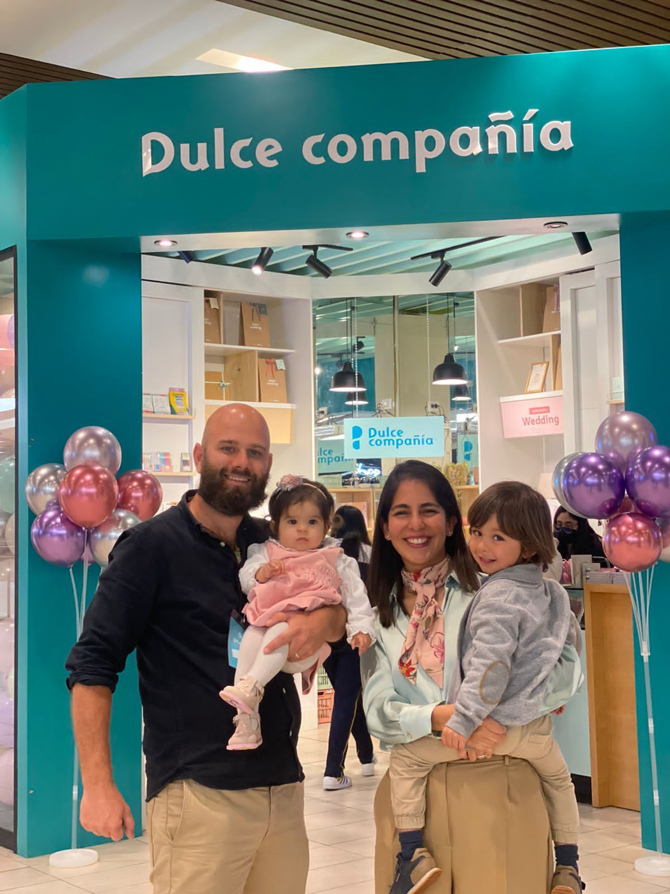
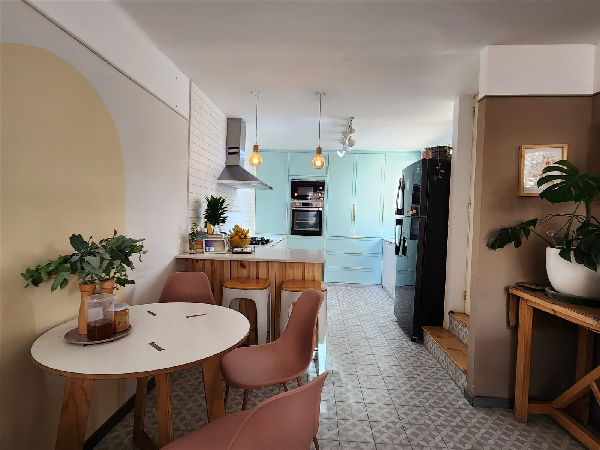
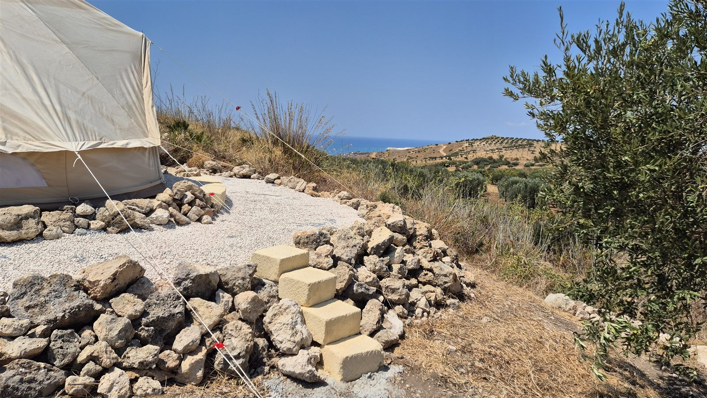
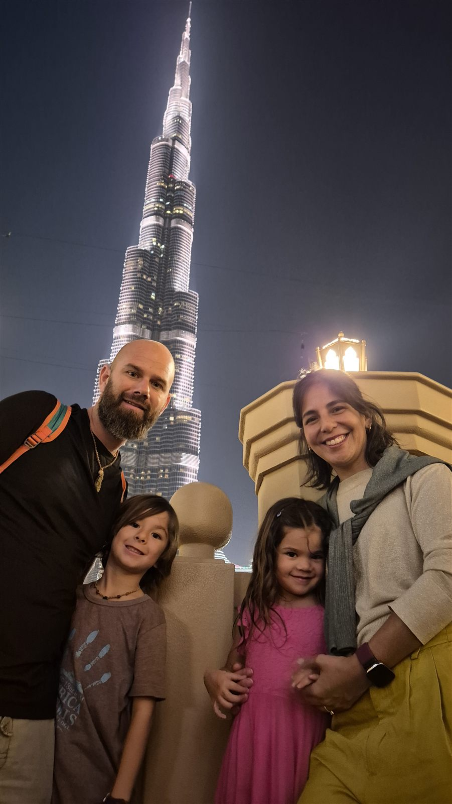

Lo entiendo. Te bombardean con contenido, sobre todo cuando el algoritmo detecta ciertos estilos de vida y sobre todo si alguna vez has indicado que invertir está entre tus planes. Esta es la diferencia:
No soy tu bróker ni un gurú de las finanzas que conduce un buen coche para presumir de sus éxitos. Soy un padre y esposo discreto con un interés genuino por los bienes raíces, la hospitalidad, la construcción y la inversión, que actualmente vive en una acogedora pequeña villa en Kuta, Lombok, y se transporta (con la familia) en una Honda Scoopy, idealmente vestido con una camisa colorida y en chanclas. Eso solo no es razón suficiente, pero si te llega la vibra, quédate para el resto...
Crecí en los Países Bajos, donde mis regalos de cumpleaños eran herramientas e iba a la ferretería local por retazos de madera para convertir mi fantasía en objetos. Al crecer, mi interés por los bienes raíces y la construcción creció también, pero el sistema escolar holandés se interponía para entrar directo a la universidad que yo prefería, así que mi familia pensó que sería bueno que estudiara negocios, porque la gente parecía comprarme cosas. Visto ahora, era más la relación lo que los hacía comprar que mis habilidades de venta, y aunque tomé algunas clases de ventas, empujar a la gente a comprar cosas que no quiere o no debería querer no era lo mío. Así que después de una corta carrera en Pepsi como representante de ventas (donde, por cierto, volví a construir grandes relaciones), llegó la hora de echarme a la carretera y viajar.
Mientras tanto, el trabajo en Pepsi sí me subió al primer peldaño: logré comprar mi primer apartamento a los 19 años. Fui escalando en la hospitalidad hasta terminar dirigiendo equipos grandes en hoteles boutique y restaurantes alrededor del mundo durante mis veintes, hasta que conocí a mi (ahora) esposa Daniella, en Perú.

Juntos montamos negocios y esos negocios empezaron a abrir tiendas. Siendo creativos con nuestros recursos financieros, y siendo Daniella arquitecta titulada, diseñamos nuestras propias tiendas y yo empecé a desempolvar mis habilidades para supervisar la construcción y ensuciarme las manos construyéndolas. La gente sentía la pasión, y la sangre, el sudor y las lágrimas que llevaban dentro, y tienda tras tienda nuestras construcciones empezaron a llamar la atención.
Siendo creativos también con nuestros propios recursos, decidimos comprar una casa abandonada en la zona que nos gustaba y arreglarla nosotros mismos, sin ahorrar en calidad pero siendo creativos con las cosas que no marcarían la diferencia. Traíamos maletas llenas de grifería Grohe de un outlet en los Países Bajos, importábamos suelo radiante del Reino Unido, pero conservamos las ventanas de acero originales y nos tomamos el tiempo de quitar el óxido y encontrar un vidriero local que pusiera doble vidrio. Ya te haces la idea.

Cuando la casa estuvo lista, unos terrenos cerca de la playa nos llamaron la atención y, tomándome un tiempo fuera de la oficina, llevé allí todos los retazos de madera y materiales de construcción que sobraban, y empecé a construir nuestro primer galpón. Los primeros meses los niños dormían en el depósito de materiales que habíamos construido con madera sobrante, mientras nosotros dormíamos en una carpa, y paso a paso convertimos el lugar en un acogedor glamping que empezamos a alquilar en Airbnb. En 2023 decidimos vender nuestros negocios y, con el tiempo, también nuestra casa. Vaciar las tiendas y la oficina me dio materiales nuevos para construir un segundo glamping para alquilar.

Poco después empezamos a viajar como familia sin un plan. Compramos boletos de ida a Aruba, con ganas de visitar otras islas del Caribe en las que viví. Con tiempo en las manos, retomé la lectura, empezando por algunos libros de finanzas. Ahí fue donde miré atrás en mi vida y pude ver de verdad qué había funcionado y qué no.
Había construido relaciones y hecho muchos amigos en el camino. Esas relaciones genuinas, basadas en la confianza, la honestidad y los principios, llevaron a los grandes motores de la vida. Éxito en los negocios, felicidad, una familia sólida, pero también éxito financiero. También aprendí de mis errores en las inversiones. Mis planes no siempre estaban bien pensados y muchas veces eran impulsivos. No siempre tenían un objetivo claro con el que alinearlos, y demasiadas veces un buen vendedor me enredó en una compra o inversión de la que luego me arrepentiría. El terreno del glamping, por ejemplo, probablemente nunca será nuestro porque la zonificación no estaba en regla. Para nosotros mismos construí algunas barreras de protección para el futuro y a Daniella, la pensadora más escéptica, le hemos pedido que dé un paso al frente si algo no se siente bien.
Ahora sabes mucho más de mí, pero ¿qué significa esto para ti? Significa lo que tú quieras que signifique. No dejes que sea el vendedor que te vende algo que no quieres. Deja que sea el amigo que comparte sus hallazgos y su experiencia, y luego, si hay algo con lo que te sientes cómodo, deja que te ayude a tomar la decisión correcta. Mi padre marcó lo que significa ser un hombre de palabra, y eso me lleva a sentir esa responsabilidad y a ver los lugares, la gente y las ubicaciones con mis propios ojos antes de compartirlos y antes de dar mi palabra a otros de que, según mi mejor conocimiento, es una oportunidad en la que yo mismo invertiría.
Pasaré el tiempo suficiente en cada lugar para ver los proyectos, la ubicación, el clima y la gente con mis propios ojos, y luego compartiré esos hallazgos. También investigaré qué significa invertir en ese país y cómo se pueden estructurar las compras. Qué puede significar en términos de impuestos, si es un lugar para vivir o para invertir. Mientras tanto, sobre todo quiero llevarte conmigo en el viaje y mostrarte adónde nos lleva, como familia de viajeros y emprendedores.

André